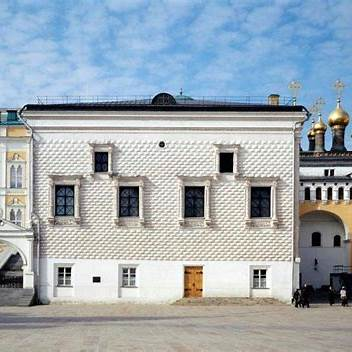
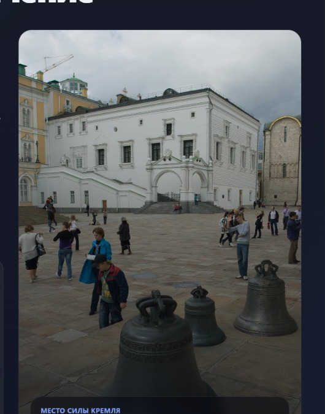
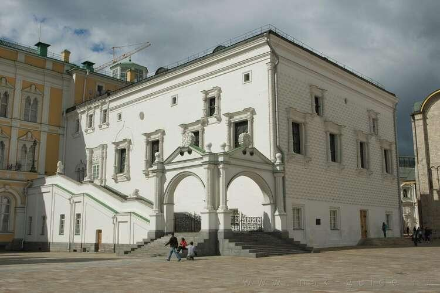
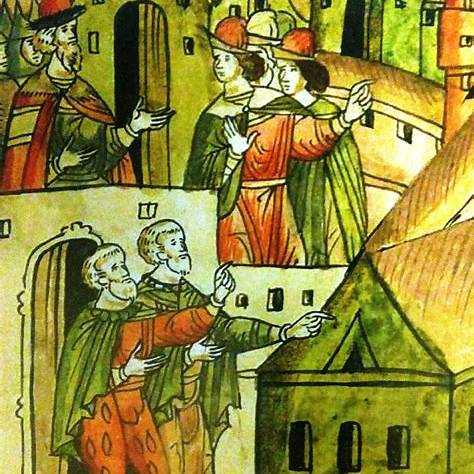
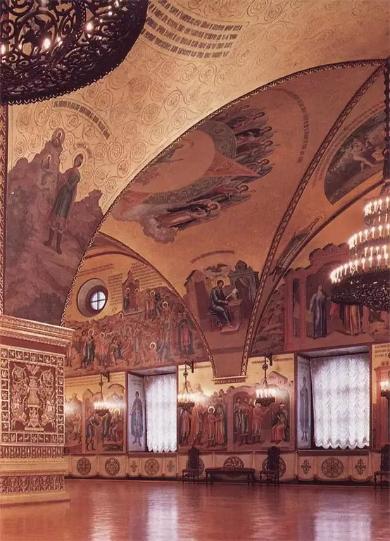
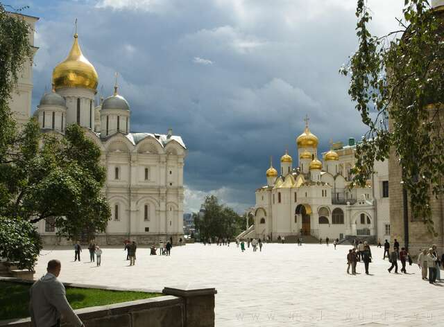
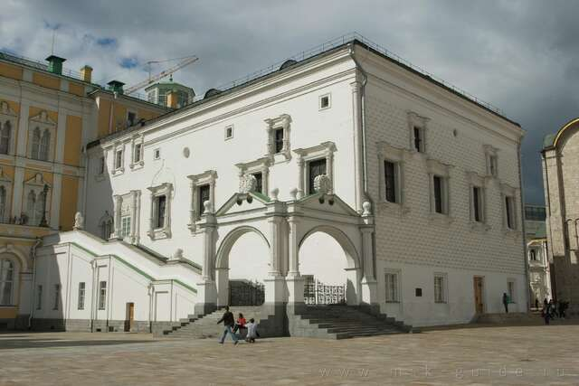

01
Гранёный руст
Создаёт характерную игру света на белом камне и придаёт фасаду узнаваемую пластику.
Грановитая палата — одно из самых узнаваемых и символически нагруженных сооружений Московского Кремля. Это не просто старинное здание, а важнейшее пространство государственной репрезентации, где архитектура, политический ритуал и историческая память веками работали вместе.
Именно здесь государственная власть показывала себя как торжественный порядок: через масштаб зала, строгость каменного фасада, церемонии, приёмы иностранных послов, пиры и официальные собрания. Даже сегодня палата воспринимается как архитектурный знак эпохи, в которой Москва превращалась в центр усиливающегося государства.

Главный широкий кадр для обложки.
Строительство Грановитой палаты относится к концу XV века — времени, когда Московское государство активно укрепляло своё политическое положение и одновременно переосмысляло архитектурный язык власти. В этот период Кремль превращался не только в оборонительный комплекс, но и в тщательно продуманную парадную резиденцию правителя.
Палата возводилась в 1487–1491 годах. Её появление связано с крупной перестройкой Кремля при Иване III, когда в Москву приглашались иностранные мастера, прежде всего из Италии. Их задача заключалась не просто в строительстве новых стен и дворцовых помещений, а в создании образа новой столицы, сопоставимой по выразительности с ведущими центрами Европы.
Уже в первые десятилетия своего существования палата стала центральным местом государственных церемоний. Здесь принимали послов, проводили торжественные обеды, праздновали победы и обсуждали вопросы, напрямую связанные с устройством русского государства.

Фото площади или старого ракурса Кремля.
Главная особенность палаты — её знаменитый фасад, обработанный рустом в форме граней. Именно из-за этого декоративного приёма здание получило своё название. Поверхность стены словно разложена на ритмичные каменные плоскости, благодаря чему фасад начинает работать как большой геометрический экран.
Архитектура палаты соединяет русскую традицию с итальянским ренессансным опытом. В ней нет избыточной мягкости: напротив, здание выглядит собранным, напряжённым и статичным. Такая сдержанность делает его особенно выразительным в окружении кремлёвских соборов и дворцовых корпусов.
Создаёт характерную игру света на белом камне и придаёт фасаду узнаваемую пластику.
Читается в пропорциях, чёткости архитектурных членений и отношении к фасаду как к парадной плоскости.
Архитектура работает как средство выразить идею прочности и порядка.
Внешний облик палаты уже сам по себе говорит о функции и статусе здания.

Фото Красного крыльца, руста, арок или крупного фрагмента фасада.
Марко Руффо был одним из архитекторов, приглашённых в Москву в эпоху Ивана III. Его деятельность связана с переломным моментом, когда Кремль становился не только крепостью, но и новой представительской столицей.
Руффо привнёс в русскую строительную среду приёмы позднесредневековой и раннеренессансной Италии, которые в Москве получили особую, более строгую и государственную трактовку.
Солари считается одной из ключевых фигур в формировании кремлёвского ансамбля конца XV века. Его работа сочетала инженерную точность, умение выстраивать парадный фасад и понимание того, как архитектура влияет на восприятие власти.
Именно через таких мастеров Москва включалась в большой европейский архитектурный диалог, но не копировала его буквально, а перерабатывала под собственные политические задачи.
Руффо и Солари стали проводниками нового художественного языка, с помощью которого Московское государство показывало свой масштаб и амбиции.

Отдельная картинка с архитекторами или исторической иллюстрацией.
Внутри Грановитой палаты главное впечатление создаёт не столько декор сам по себе, сколько масштаб пространства. Зал воспринимается как единый монументальный объём, в центре которого находится опорный столб. Благодаря этому решению интерьер одновременно открыт и строго организован.
Сводчатая система поднимает взгляд вверх, а росписи, декоративные мотивы и крупные светильники усиливают чувство церемониальности. Интерьер буквально заставляет человека чувствовать себя внутри пространства, где каждое движение, слово и жест должны были иметь официальный вес.
Такой зал идеально подходил для приёмов послов, больших торжеств и обедов по случаю военных побед. Пространство не просто вмещало людей — оно дисциплинировало их присутствие и подчеркивало иерархию.

Настоящее интерьерное фото со сводами, росписями и центральной опорой.
Грановитая палата на протяжении столетий была одним из главных помещений русской государственной жизни. Здесь принимали иностранных послов, устраивали торжественные пиры, отмечали важнейшие победы, собирали представителей власти и демонстрировали иностранным гостям величие московского двора.
Её значение заключалось не только в том, что в ней происходили важные события. Не менее важно и то, как именно они происходили. Пространство палаты задавало нужный масштаб любой церемонии: усиливало впечатление порядка, величия и исторической непрерывности власти.
Даже в современном восприятии палата остаётся не просто архитектурным памятником, а концентратом представлений о государственном ритуале старой Москвы. Это место, где политическая история и художественная форма почти неразделимы.
Палата была пространством, где Русь показывала себя иностранным гостям как сильное и организованное государство.
Пиры и церемонии здесь были частью публичного ритуала власти.
Архитектура сохраняет политический смысл на протяжении веков.

Другой ракурс площади, чтобы визуально не повторять начало.
Её фасад говорит о прочности и порядке, её интерьер — о церемонии и иерархии, а её история — о становлении Москвы как политического центра. Именно поэтому палата остаётся одной из самых выразительных и символически насыщенных построек Московского Кремля.

Самый красивый завершающий кадр — спокойный, широкий и атмосферный.